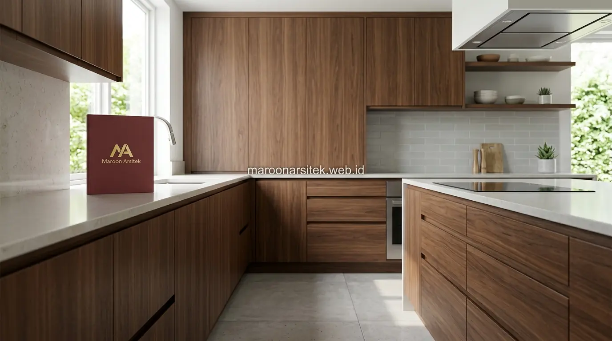

Jasa interior rumah yang dapat dipercaya dilengkapi sistem garansi tertulis dan kontrol kualitas berlapis pada setiap tahap pengerjaan, memberikan jaminan konkret atas hasil kerja, bukan sekadar janji lisan mengenai kerapian finishing. Maroon Arsitek menerapkan sistem ini pada setiap proyek melalui layanan jasa interior rumah di wilayah Jabodetabek untuk memberikan kepastian bagi klien.
Klien sering kesulitan menilai kualitas jasa interior sebelum pekerjaan selesai, sehingga jaminan tertulis dan mekanisme kontrol kualitas yang jelas menjadi faktor penting yang membedakan penyedia jasa yang benar-benar dapat diandalkan. Bagian berikut menguraikan sistem garansi dan kontrol kualitas yang diterapkan untuk menjawab kebutuhan tersebut.
Sistem Garansi Tertulis atas Hasil Pengerjaan Interior
Sistem garansi tertulis mencantumkan cakupan perbaikan yang akan diberikan apabila ditemukan masalah pada hasil pekerjaan interior dalam periode tertentu setelah serah terima, memberikan klien dasar hukum yang jelas untuk mengajukan klaim perbaikan. Garansi ini menjadi bentuk tanggung jawab konkret atas kualitas pekerjaan yang telah diselesaikan.
Cakupan garansi mencantumkan jenis masalah yang ditanggung, seperti kerusakan mekanisme laci atau pengelupasan lapisan finishing, beserta durasi waktu klaim dapat diajukan setelah pekerjaan interior dinyatakan selesai dan diserahkan kepada klien.
Dokumen garansi diserahkan bersamaan dengan dokumen serah terima pekerjaan, memberikan klien kepastian tertulis yang dapat dirujuk kembali apabila diperlukan tanpa harus bergantung pada kesepakatan lisan yang sulit dibuktikan di kemudian hari.
Cakupan Klaim yang Dijamin dalam Periode Garansi
Kebutuhan kejelasan atas apa yang ditanggung garansi dijawab melalui pencantuman rincian cakupan klaim, seperti kerusakan fungsi mekanisme atau cacat finishing yang muncul akibat kesalahan pengerjaan, bukan akibat penggunaan yang tidak wajar oleh penghuni.
Kejelasan cakupan ini mencegah kesalahpahaman antara klien dan penyedia jasa mengenai jenis masalah yang termasuk dalam tanggung jawab garansi, sehingga proses klaim dapat berjalan lebih lancar apabila diperlukan di kemudian hari.
Kontrol Kualitas Berlapis Sebelum Serah Terima Pekerjaan
Kontrol kualitas berlapis diterapkan pada beberapa titik pemeriksaan sepanjang proses pengerjaan interior, bukan hanya pada tahap akhir, sehingga masalah dapat terdeteksi dan diperbaiki lebih awal sebelum pekerjaan dinyatakan selesai secara keseluruhan. Pendekatan berlapis ini mengurangi risiko cacat yang baru ditemukan setelah serah terima kepada klien bersama tim desainer interior kami.
Setiap tahap pengerjaan, mulai dari pembuatan rangka furniture hingga aplikasi finishing akhir, melalui pemeriksaan kualitas tersendiri sebelum dilanjutkan ke tahap berikutnya, memastikan standar terjaga secara konsisten sepanjang proses produksi.
Pemeriksaan akhir sebelum serah terima mencakup uji fungsi seluruh mekanisme furniture dan pemeriksaan visual detail finishing, sebagai tahap validasi terakhir sebelum klien menerima hasil pekerjaan secara resmi.

Pemeriksaan Bertahap pada Setiap Tahap Produksi Furniture
Kebutuhan deteksi dini terhadap masalah kualitas dijawab melalui pemeriksaan bertahap pada setiap tahap produksi furniture, mulai dari pemotongan material hingga perakitan, sehingga kesalahan dapat dikoreksi sebelum berlanjut ke tahap finishing akhir.
Pemeriksaan bertahap ini lebih efektif dibanding pemeriksaan tunggal di akhir proses, karena kesalahan pada tahap awal produksi dapat langsung diperbaiki tanpa harus membongkar ulang furniture yang sudah melalui banyak tahap pengerjaan.
Standar Presisi Pengukuran dan Pemasangan Furniture
Standar presisi diterapkan sejak tahap pengukuran lokasi hingga pemasangan akhir furniture built-in, memastikan hasil yang rapi tanpa celah mencolok maupun ketidaksesuaian dengan kondisi ruang aktual di lapangan. Standar ini menjadi dasar dari keseluruhan sistem kualitas yang diterapkan pada jasa interior rumah.
Pengukuran dilakukan menggunakan alat yang terkalibrasi dengan baik, serta mempertimbangkan toleransi terhadap kondisi dinding atau lantai yang mungkin tidak sepenuhnya presisi pada bangunan eksisting, terutama pada rumah dengan usia bangunan yang sudah cukup lama.
Tim pemasangan bekerja mengacu pada hasil pengukuran yang telah diverifikasi, memastikan setiap furniture terpasang sesuai posisi yang direncanakan tanpa penyesuaian mendadak yang dapat mengurangi kerapian hasil akhir.
Kalibrasi Alat Ukur untuk Hasil yang Konsisten
Kebutuhan konsistensi hasil pengukuran dijawab melalui kalibrasi rutin terhadap alat ukur yang digunakan tim lapangan, memastikan setiap pengukuran yang dilakukan memiliki akurasi yang sama pada setiap proyek yang dikerjakan.
Kalibrasi ini menjadi bagian dari standar operasional yang menjaga konsistensi kualitas hasil pengukuran, terlepas dari tim atau lokasi proyek yang berbeda-beda dalam pelaksanaan jasa interior rumah.